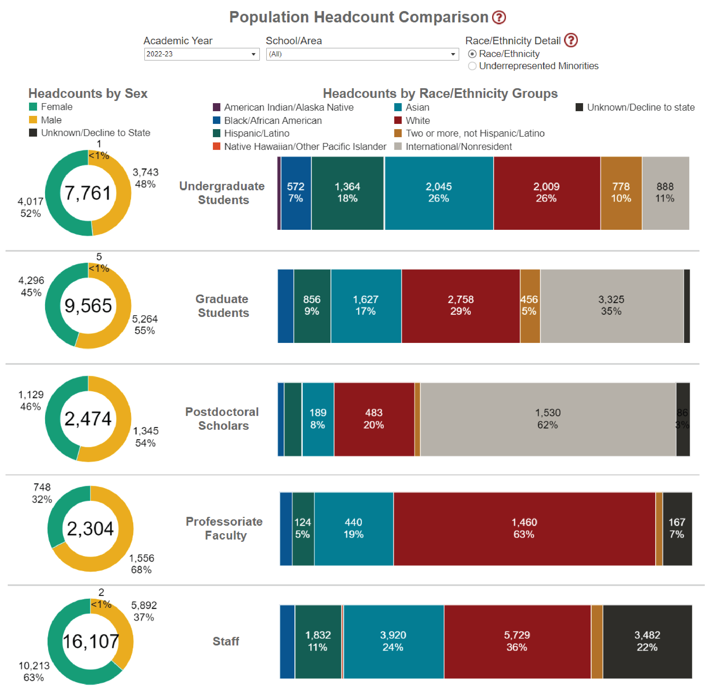
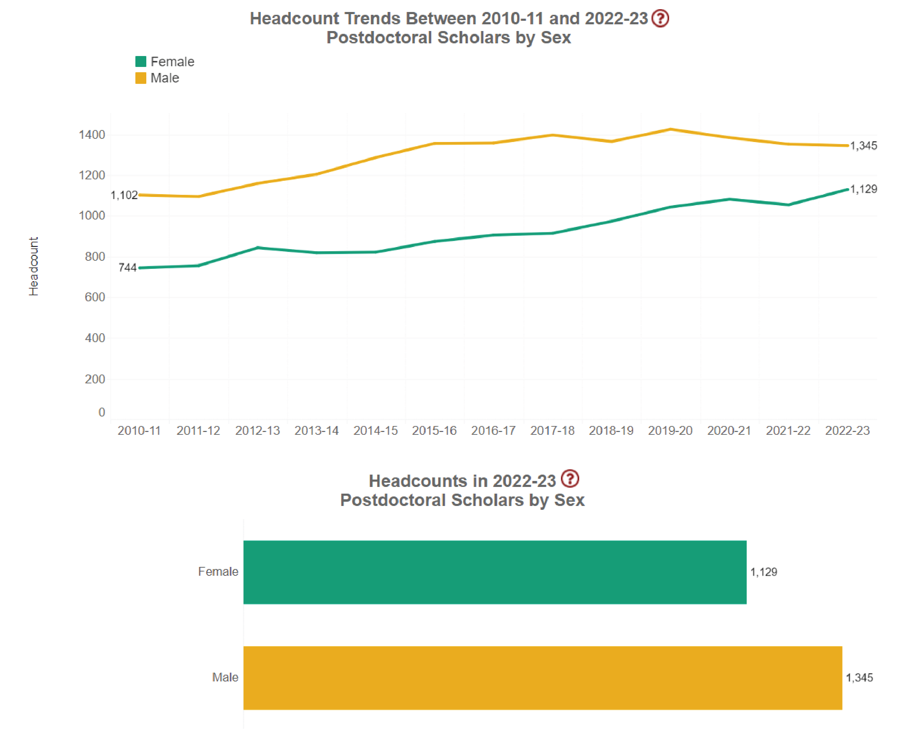
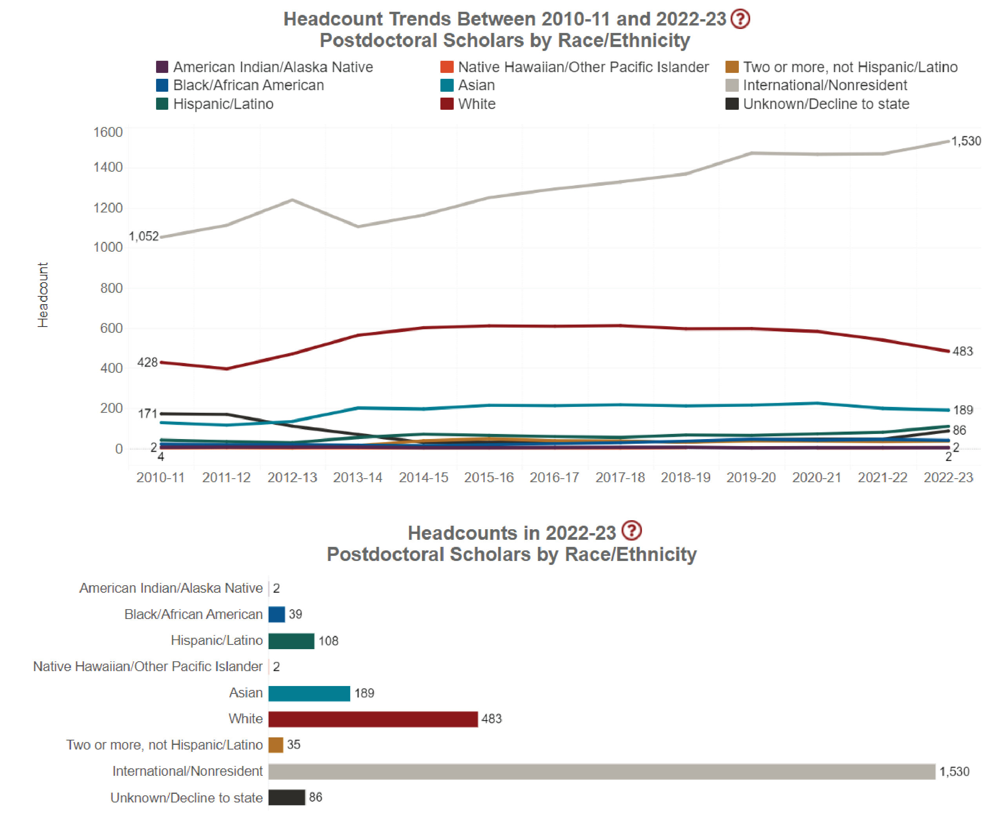
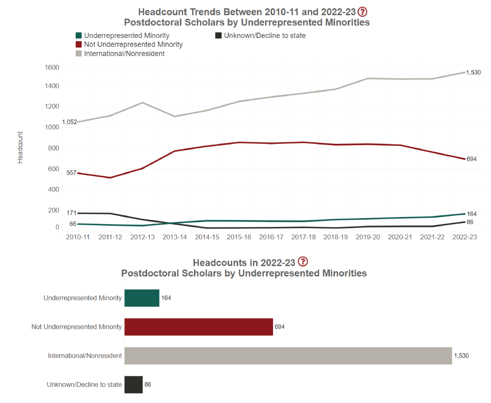

Postdocs at Stanford
Postdocs at Stanford Background
Defining a “Postdoc”
This section of the Report concerns how postdocs are officially defined by various institutions involved in the academic research enterprise.
National Institutes of Health (NIH) & National Science Foundation (NSF)
In 2007, the National Institutes of Health (NIH) and the National Science Foundation (NSF) agreed on the definition of a postdoc as “an individual who has received a doctoral degree (or equivalent) and is engaged in a temporary and defined period of mentored advanced training to enhance the professional skills and research independence needed to pursue his or her chosen career path.”1 For intramural postdocs, the NIH further clarifies that “applicants for postdoctoral [sic] must have less than 5 years of relevant research experience since the receipt of their doctoral degrees.”2
Stanford University
Stanford University’s Research Policy Handbook3 defines a postdoc as the following: “A Stanford postdoctoral scholar is a non-matriculated trainee, in graduate student status, in residence at Stanford University pursuing advanced studies beyond the doctoral level in preparation for an independent career. Postdoctoral Scholars are appointed for a limited period of time and may participate on Stanford research projects and/or may be supported by external awards or fellowships. In all cases, their appointment at Stanford is for the purpose of advanced studies, research, and training under the mentorship of a Stanford faculty member.”
Doctorate-holding researchers at Stanford may only be a “postdoc” for a maximum of five years. It is not uncommon for postdocs who have reached the five-year time limit to be appointed as a research staff member for an additional one to two years. During this time, day-to-day work responsibilities (most often) remain the same as when the researcher was a “postdoc”. These researchers can continue working at Stanford for years on consecutive short term contracts.
Some early career PhD researchers come to Stanford with external funding. These researchers are sometimes classified as Visiting Scholars rather than postdocs and are therefore not guaranteed to be paid the University Minimum Postdoc Salary depending on their individual funding source. There are many non-tenure track PhD-holding researchers at Stanford, only some of whom are officially classified as postdocs.
For academic workers at Stanford, these definitions often feel like we are Schrödinger’s Postdoc - we exist in a superposition of student and employee until observation collapses us into whatever category is convenient for the University in that particular case.1
Massachusetts Institute of Technology (MIT)
The Office of the Vice President for Research at MIT says postdocs “are valued members of MIT’s community, playing critical roles as trainees and partners in our academic research enterprise. Working under the supervision of MIT faculty members, postdoctoral scholars come to MIT to develop their scholarly competence… Postdocs join the MIT community soon after receiving their doctorate, and their length of stay varies depending on area of interest and individual circumstances. Since the postdoctoral position is not intended to be long-term, MIT limits the postdoctoral period to four years, with promotion to the rank of senior postdoctoral associate after three years. Extension for a fifth year or promotion to research scientist requires a dean’s or VPR approval.”4 Postdocs can be appointed as Postdoctoral Fellows or Associates based on whether researchers receive a salary from MIT or are paid by fellowship or stipend.5
Harvard University
Postdocs at Harvard may be employed by the Faculty of Arts and Sciences/School of Engineering and Applied Sciences (FAS/SEAS), Harvard Medical School, or the School of Public Health. The FAS Postdoctoral Fellows’ Handbook states “Postdoctoral scholars (postdocs) come to Harvard University for further training in their chosen discipline under the general supervision of one or more Harvard faculty members. The FAS and SEAS recognize that postdocs are critical engines to our research and educational enterprise, contributing significantly to the discovery and creation of new knowledge, and helping to guide the research of undergraduate and graduate students… Postdoctoral Fellows and Research Associates are not faculty, staff, or students, but researchers in training.”6 The Office for Postdoctoral Fellows at Harvard Medical School says “the engine of the basic research laboratories at HMS is the postdoctoral workforce,” but admits that “as trainees, postdoctoral fellows are not considered students, staff, or faculty and therefore exist outside of the established policies and procedures for those populations.”7 At the School of Public Health, “postdoctoral research fellows are trainees working in apprenticeship mode in preparation for a career as scientific professionals.”8
The FAS Postdoctoral Fellows’ Handbook defines the term “Postdoc” as research scholars who have recently completed a doctoral degree and are temporarily engaged in research in the FAS/SEAS and divides them into four categories of researchers:6
- “Employee” postdocs, who are supported by research grants and contracts or internal Harvard funding under the direction of a Harvard Principal Investigator.
- “Stipendiary” postdocs, who receive a fellowship that is managed by Harvard University. In this case the fellow is paid through Harvard.
- “External” postdocs, who are paid directly by an external entity and are, therefore, not paid through Harvard.
- “Research Associates”, who, ordinarily, have had at least three years of postdoctoral experience and are continuing their research under the general supervision of one or more faculty members.
UC Berkeley
Postdocs at UC Berkeley are engaged in “rigorous research experiences that offer recent Ph.D. recipients a chance to pursue their research agendas, build on their degrees, hone their skills and abilities, prepare to launch their professional careers, and take the next step in their professions… Initial postdoc appointments are full-time positions that typically last between one and two years, up to a maximum reappointment of five years with a rare exception of a sixth year.”9 Across the entirety of the UC system, postdocs are officially defined in the tentative agreement unionized postdocs ratified in late 202210 as (1) “an individual who has received a doctoral degree (or equivalent) and is engaged in a temporary and defined period of mentored advanced training to enhance the professional skills and research independence needed to pursue his or her chosen career path. (2) Postdoctoral Scholars train under the direction and supervision of faculty mentors in preparation for academic or research careers. (3) In addition to pursuing advanced preparation in research, Postdoctoral Scholars may be approved to engage in other activities to enhance teaching and other professional skills. If formal teaching duties are assigned, a Postdoctoral Scholar will be assigned both a Postdoctoral Scholar title and an appropriate teaching title. (4) Ordinarily, Postdoctoral Scholars are not permitted to serve as principal investigators on extramurally sponsored contracts or grant applications. Because the University recognizes that proposal preparation is an important aspect of most postdoctoral training, campuses may permit Postdoctoral Scholars to serve as principal investigators on such applications that are restricted to Postdoctoral Scholars, or in other circumstances approved by the University. Applications for Principal Investigator status shall be carefully considered. (5) The provisions of this section are not grievable.” Depending on funding source, postdocs at UC may be classified according to different employment codes while all falling under the above definition.
Postdoc Demographics at Stanford
The following demographic information was taken from the publicly accessible version of the Stanford University IDEAL Dashboard representing the 2022-2023 academic year.11 In total, there are 2,474 postdocs with a male:female ratio of 54:46 (these data do not include an intersex option). More than 60% of postdocs are international. There are more postdocs than faculty (2,304). There are three times as many undergraduates (7,761) as there are postdocs and nearly four times as many graduate students (9,565). There are six and a half times as many staff (16,107) as postdocs. Nearly half of postdocs have dependents. Based on insurance enrollment data shared with SURPAS in 2022, 26% of postdocs have their spouse as a dependent on their health insurance, 15% cover both spouse and children, and 2% cover children with no spouse. That adds to a total of 43% of postdocs with dependents, which serves as a lower limit; some postdocs have partners working outside of academia who may cover postdocs or their families with their health insurance.

In addition to the slice-in-time data about various populations within Stanford, the IDEAL dashboard has headcount trends of populations between the 2010-2011 and 2022-2023 academic years broken down across the following demographics: sex, race/ethnicity, and underrepresented minority status.
Postdoc Composition by Sex
In the 2010-2011 academic year, the postdoctoral population was 60% male and 40% female, with a total population of 1,846. In 2022-2023, there were 2,474 postdocs with a 54% male/46% female split. The change in total postdoctoral population during this time represents a 1.3x increase. Sex ratios for other groups in 2022-2023 are as follows (male:female): Undergraduate: 48:52; Graduate Student: 55:45; Professoriate Faculty: 68:32; Staff: 37:63. There is a clear skew in the breakdown of populations by sex for more senior academic positions, where the professoriate faculty is heavily skewed towards male and academic staff is heavily skewed towards female. This stands in contrast to the relative parity between sexes at earlier career stages. Only data on binary sex is available via the IDEAL Dashboard currently. The University is undertaking a Gender Data Enablement Project to address this shortcoming.

Postdoc Composition by Ethnicity/Race
The majority of the Stanford postdoc community is international. This is not further disambiguated by nation of origin or race/ethnicity, making assessment of demographics for a majority of the postdoctoral population limited. In the 2010-2011 academic year, 57% of postdocs were international. That proportion increased to 62% in the 2022-2023 academic year. The next largest group of postdocs are white postdocs, comprising 23% and 20% in the 2010-2011 and 2022-2023 academic years, respectively. In 2010-2011, 7% of postdocs were Asian; in 2022-2023, that percentage was 8%. Approximately 4% of the postdoc population identified as Hispanic/Latino and approximately 2% identified as Black/African American in 2022-2023.

Postdoc Composition by Underrepresented Minority Status
In the breakdown of postdocs by underrepresented minority status, international scholars, the majority of our community, are lumped into the single category of international/nonresident. This is not further disambiguated by national origin or underrepresented status. In the 2010-2011 academic years, 30% of postdocs were not underrepresented minorities. That fraction remained relatively flat at 28% in 2022-2023. Underrepresented minorities went from 3.5% to 7% of the postdoctoral population between the 2010-2011 and 2022-2023 academic years. That increase in underrepresented minorities seems to have come from a change in the number of postdocs in the unknown/decline to state category, which went from 9% to 3% of postdocs over the same time frame.

Missing from the IDEAL Dashboard data is information on the median tenure of postdocs. How long an individual postdoc remains at the university and information of where postdocs obtain permanent employment after leaving Stanford are absent. Also absent is information regarding previous employment (e.g. coming to Stanford directly from graduate school vs. from another postdoc position).
References
Footnotes
This adheres to the Copenhagen Interpretation.↩︎